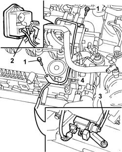

1064A27 PIPE between vacuum reservoir and actuator control solenoid valve - R.R.
- Path
- Procedures > 10 ENGINE > 1064 ENGINE SUPERCHARGING SYSTEM > 1064A TURBOCHARGER ASSEMBLY > 1064A27 PIPE between vacuum reservoir and actuator control solenoid valve - R.R.
- Kind
- repair procedure (removal / refitting; the operation number is the code)
- Applies to
- engines: 2.4 JTD 10V; all production periods
- Interactive page
- https://sloeber94.github.io/elrnDB-lThss/en/#/103017
Applies to: all engines; all production periods
 Removing
Removing
 Refitting
RefittingSee in Op. 1016A10
1. Undo the bolts fixing the rigid section of the pipe.
2. Disconnect the flexible pipe from the vacuum reservoir.
3. Disconnect the flexible pipe from the actuator control solenoid valve.
4. Remove the pipe assembly.

Applies to: all engines; all production periods
Refitting
Removing- Fit the pipe assembly.
- Connect the flexible pipe to the actuator control solenoid valve.
- Connect the flexible pipe to the vacuum reservoir.
- Tighten the bolts fixing the rigid section of the pipe.
See in Op. 1016A10